NCAA 180 2020 Postseason

National Champion


NIT Champion · Stagg Bowl

Bracket
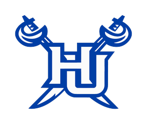
HamptonHBCU178.60CampbellPioneer201.22 LehighIvy174.12
LehighIvy174.12 NC StateACC115.26
NC StateACC115.26 Utah StateMountain West143.32
Utah StateMountain West143.32 HarvardIvy163.56
HarvardIvy163.56 Virginia TechACC171.02
Virginia TechACC171.02 VanderbiltSEC143.08
VanderbiltSEC143.08 Fiesta BowlCampbellPioneer158.12LehighIvy155.46
Fiesta BowlCampbellPioneer158.12LehighIvy155.46 Rose BowlHarvardIvy143.56Virginia TechACC200.26National ChampionshipCampbellPioneer194.42Virginia TechACC112.20
Rose BowlHarvardIvy143.56Virginia TechACC200.26National ChampionshipCampbellPioneer194.42Virginia TechACC112.20 CampbellPioneer201.22
CampbellPioneer201.22 Sugar BowlLehighIvy174.12NC StateACC115.26
Sugar BowlLehighIvy174.12NC StateACC115.26 Peach BowlUtah StateMountain West143.32HarvardIvy163.56
Peach BowlUtah StateMountain West143.32HarvardIvy163.56 Orange BowlVirginia TechACC171.02VanderbiltSEC143.08
Orange BowlVirginia TechACC171.02VanderbiltSEC143.08 Cotton BowlCampbellPioneer158.12LehighIvy155.46Fiesta BowlHarvardIvy143.56Virginia TechACC200.26Rose BowlCampbellPioneer194.42Virginia TechACC112.20National ChampionshipSugar BowlCampbellPioneer201.22Peach BowlLehighIvy174.12NC StateACC115.26Orange BowlUtah StateMountain West143.32HarvardIvy163.56Cotton BowlVirginia TechACC171.02VanderbiltSEC143.08Fiesta BowlCampbellPioneer158.12LehighIvy155.46Rose BowlHarvardIvy143.56Virginia TechACC200.26National ChampionshipCampbellPioneer194.42Virginia TechACC112.20Sugar BowlCampbellPioneer201.22LehighIvy174.12Peach BowlNC StateACC115.26Utah StateMountain West143.32Orange BowlHarvardIvy163.56Virginia TechACC171.02Cotton BowlVanderbiltSEC143.08CampbellPioneer158.12Fiesta BowlLehighIvy155.46HarvardIvy143.56Rose BowlVirginia TechACC200.26CampbellPioneer194.42National ChampionshipVirginia TechACC112.20
Cotton BowlCampbellPioneer158.12LehighIvy155.46Fiesta BowlHarvardIvy143.56Virginia TechACC200.26Rose BowlCampbellPioneer194.42Virginia TechACC112.20National ChampionshipSugar BowlCampbellPioneer201.22Peach BowlLehighIvy174.12NC StateACC115.26Orange BowlUtah StateMountain West143.32HarvardIvy163.56Cotton BowlVirginia TechACC171.02VanderbiltSEC143.08Fiesta BowlCampbellPioneer158.12LehighIvy155.46Rose BowlHarvardIvy143.56Virginia TechACC200.26National ChampionshipCampbellPioneer194.42Virginia TechACC112.20Sugar BowlCampbellPioneer201.22LehighIvy174.12Peach BowlNC StateACC115.26Utah StateMountain West143.32Orange BowlHarvardIvy163.56Virginia TechACC171.02Cotton BowlVanderbiltSEC143.08CampbellPioneer158.12Fiesta BowlLehighIvy155.46HarvardIvy143.56Rose BowlVirginia TechACC200.26CampbellPioneer194.42National ChampionshipVirginia TechACC112.20Playoff 16 games
National Championship
Third Place Game
Final Four
Fiesta Bowl

Rose Bowl

Elite 8
Orange Bowl

Cotton Bowl

Peach Bowl

Sugar Bowl

Playoff Group Stage

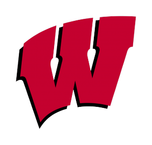


Bowls 30 games
Prestige Bowls
Capital One Bowl
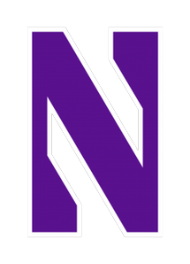


 Citrus BowlOrlando, FL
Citrus BowlOrlando, FL


 Holiday BowlSan Diego, CA
Holiday BowlSan Diego, CA


 Music City BowlNashville, TN
Music City BowlNashville, TN


Outback Bowl


 Sun BowlEl Paso, TX
Sun BowlEl Paso, TX

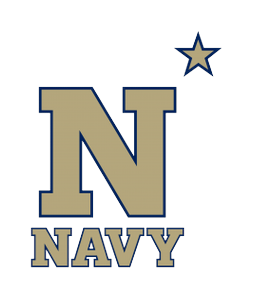

Marquee Bowls
 Alamo BowlSan Antonio, TX
Alamo BowlSan Antonio, TX


 Armed Forces BowlFort Worth, TX
Armed Forces BowlFort Worth, TX


 Bahamas BowlNassau, Bahamas
Bahamas BowlNassau, Bahamas
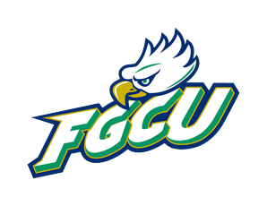

Belk Bowl
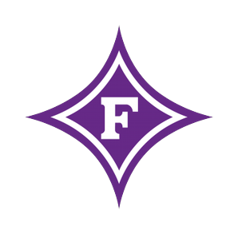

Birmingham Bowl


Boca Raton Bowl


Brooklyn Bowl


Chick-fil-A Bowl


EA Sports Bowl

FedEx Bowl

 Gator BowlJacksonville, FL
Gator BowlJacksonville, FL
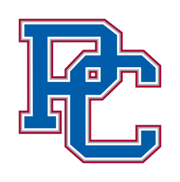


Geico Bowl

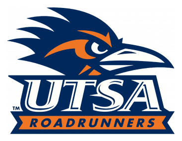
Ice Bowl

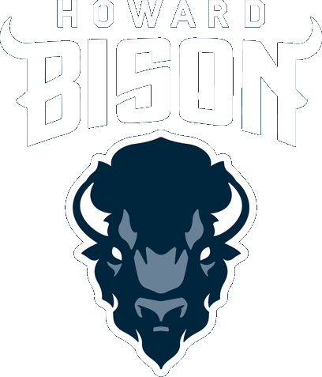
 Idaho Potato BowlBoise, ID
Idaho Potato BowlBoise, ID


 Independence BowlShreveport, LA
Independence BowlShreveport, LA


 Las Vegas BowlLas Vegas, NV
Las Vegas BowlLas Vegas, NV

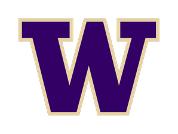

 Liberty BowlMemphis, TN
Liberty BowlMemphis, TN


 Military BowlAnnapolis, MD
Military BowlAnnapolis, MD


New Mexico Bowl


 New Orleans BowlNew Orleans, LA
New Orleans BowlNew Orleans, LA


PlayStation Bowl


TaxSlayer Bowl


Texas Bowl


Xbox Bowl

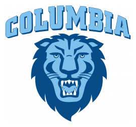
NIT
Stagg Bowl
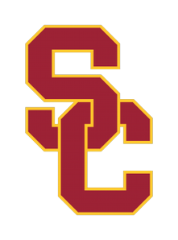

Semifinal
Group Semifinal 1


Group Semifinal 2

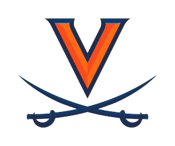

Qualifier Groups
Group 1


Group 2


Group 3


Group 4


Group 5


Group 6


Group 7


Group 8
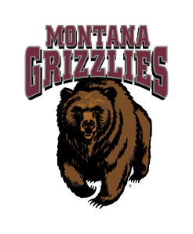


Opening Groups
Group 1


Upcoming
Group 10


Upcoming
Group 11
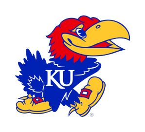


Upcoming
Group 12


Upcoming
Group 13


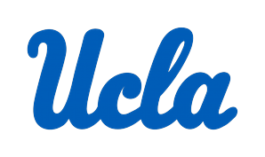
Upcoming
Group 14


Upcoming
Group 15


Upcoming
Group 2


Upcoming
Group 3


Upcoming
Group 4


Upcoming
Group 5


Upcoming
Group 6


Upcoming
Group 7

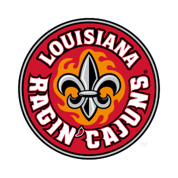
Upcoming
Group 8


Upcoming
Group 9


Upcoming
Conference Championships
ACC
Big 12

Big East

Big Sky

Big Ten

CUSA
HBCU

Ivy

Mountain West

Pac-12

Pioneer

SEC

Southland

Sun Belt

Wild
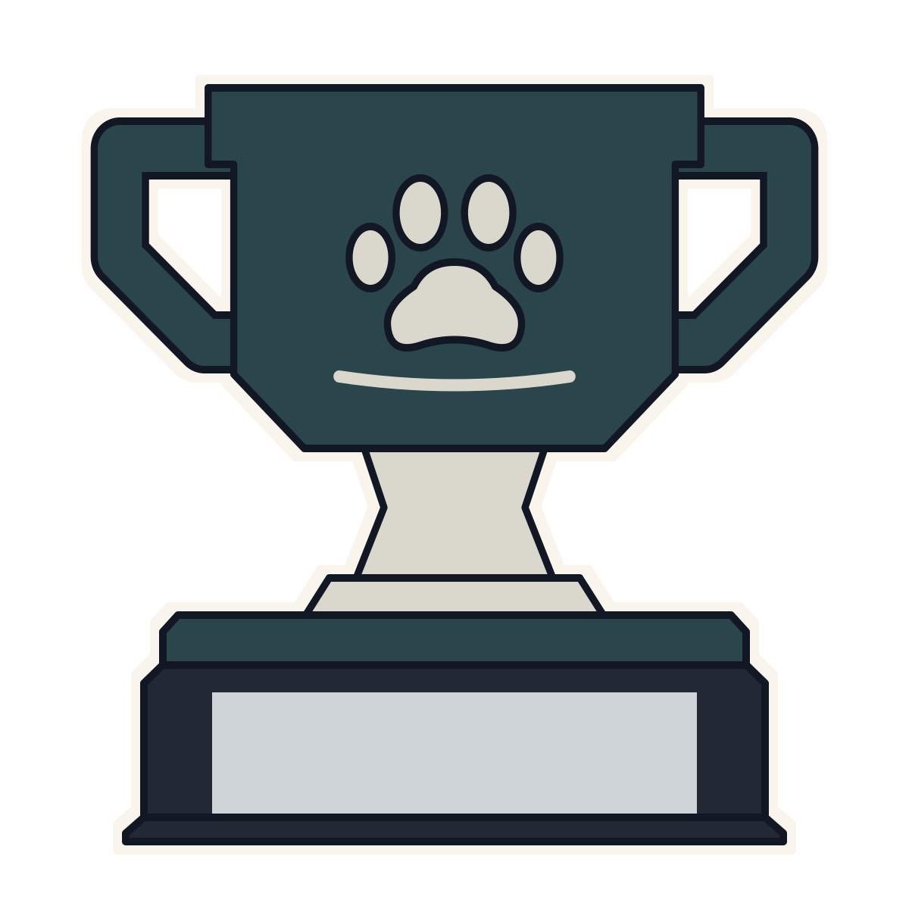
Names, logos and formats as played that season. Some early seasons are missing scores (results were recorded outside Sleeper).